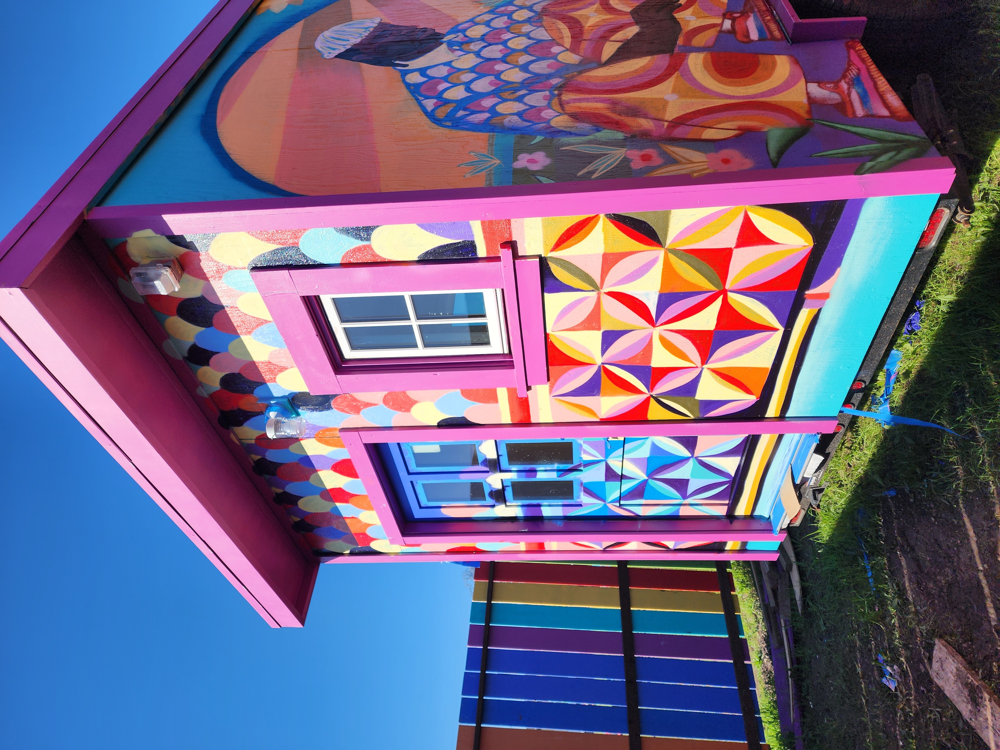
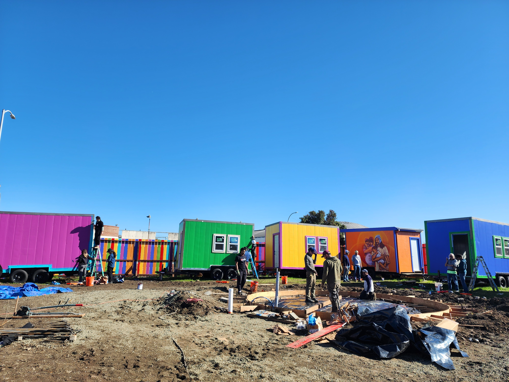

Richmond Tiny Village and Garden Project
Tiny Village Spirit is currently engaged in leading the creation of the Richmond Tiny House Village, Farm and Garden, a seven-agency collaboration doubling the number of dedicated emergency housing units serving young people, ages 18 to 24, in Richmond, CA.
We are increasing the number of emergency housing units serving Richmond youth from twelve to twenty-four, and in doing so also pave the way for more tiny house villages serving unsheltered people in Richmond and Contra Costa County. This project has a move-in goal of July 2025.
Volunteers are actively building on-site every week. Click here to learn more about how you can get involved.
Address: 175 23rd Street, Richmond, CA 94804
Gallery




3129 Ellis Street, Berkeley, CA 94703 | Tiny Village Spirit is registered as a 501(c)(3) non-profit organization. Tax ID/EIN: 99-2684195.
Copyright ©2023-2025 Tiny Village Spirit · All Rights Reserved · Made with ❤️ by Ronen Jain
3129 Ellis Street, Berkeley, CA 94703 | Tiny Village Spirit is registered as a 501(c)(3) non-profit organization. Tax ID/EIN: 99-2684195.
Copyright ©2023-2025 Tiny Village Spirit · All Rights Reserved · Made with ❤️ by Ronen Jain